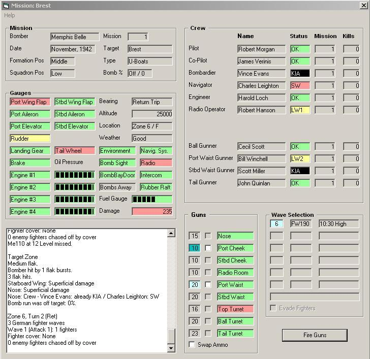

|  |
| Memphis Belle in the middle of its first mission |
Bomber: The bomber's name. Date: The month and year of the mission. Formation Pos: The bomber's position within the squadron. If the bomber drops out of formation, this will be "Middle". If the bomber aborts its mission, this will be "Out". Lancasters are always "middle" due to being in the middle of the bomber stream. Squadron Pos: The squadron's position within the group. If the bomber drops out of formation, this will be "Middle". If the bomber aborts its mission, this will be "Abort". Also always middle for Lancs. Mission: The bomber's mission number. (First mission = 1, etc.) Target: The city in which the target is located. Type: The type of target the bomber should drop its bombs on. Bomb %: Indicates whether the bombs were dropped on/off target, and what the % on target was. It is blank until the bombs are dropped. Invisible if the bomber is a YB-40.Gauges Frame
Wing Flap: One for each wing. Affect lift and drag. If the flap control is inoperable, then both flaps will be inoperable. If both flaps are inoperable, the bomber suffers a negative landing modifier. Aileron: One for each wing. Change roll/rotation of the fuselage. If the cockpit aileron control is inoperable, then both ailerons will be inoperable. If both ailerons are inoperable, the bomber suffers a negative landing modifier. Elevator: One for each horizontal stabilizer (the tail "wings"). Change pitch ("up/down"). If the cockpit elevator control is inoperable, then both elevators will be inoperable. If both elevators are inoperable, the bomber suffers a negative landing modifier. Rudder: One for B-17s, two for B-24s and Lancs. Change yaw (side-to-side). If the cockpit rudder control is inoperable, then all rudders will be inoperable. If all rudders are inoperable, the bomber suffers a negative landing modifier. Landing Gear: The main gear located under the wings. If the cockpit landing gear control is inoperable, then both landing gears will be inoperable. If all landing gears are inoperable, the bomber suffers a negative landing modifier. Tail / Nose Wheel: B-17s and Lancs had tailwheels; B-24s had a nosewheel. If the Tail / Nose Wheel is inoperable, the bomber suffers a negative landing modifier. Engine: One for each of four engines, numbered from outboard port (1), to inboard port (2), to inboard starboard (3) to outboard starboard (4). The more engines a bomber loses, the less speed, lift and range it is able to maintain. A bomber with three engines out also suffers a negative landing modifier. Oil Pressure: There is one oil tank per engine. The dark band gets smaller as pressure decreases. If an engine loses all its oil, the engine will be shut down. Bearing: Indicates whether the bomber is outbound (on its way to the target) or on the return trip to base. Altitude: 25,000 feet indicates the bomber is at normal mission altitude; 10,000 feet indicates the bomber dropped to low level due to damage to a heater or engine, loss of oxygen, etc. Bombers at 10,000 feet are subject to flak over enemy occupied land zones. Location: The zone and country the bomber is over. "Zones" are concentric circles centered on the bomber's base in either England or Italy. Zone 1 is the base zone, while zone 12 is the furthest zone out. (Salzburg and Prague are the most distant targets from England.)Mission Log"Alb" = Albania "Alb-Y" = Albania-Yugoslavia border "Alps" = Alps "A" = Austria "B" = Belgium "B-G" = Belgium-Germany border "Bul" = Bulgaria "Bul-R" = Bulgaria-Rumania border "Cze" = Czechoslovakia "Den" = Denmark "E" = England "F" = France "G" = Germany "G-Cze" = Germany-Czechoslovakia border "Gre" = Greece "H" = Hungary "I" = Italy "I-Y" = Italy-Yugoslavia border "N" = Netherlands "N-G" = Netherlands-Germany border "Nwy" = Norway "R" = Rumania "W" = Water "W-Alb" = Albania coast "W-F" = France coast "W-G" = Germany coast "W-Gre" = Greece coast "W-I" = Italy coast "W-N" = Netherlands coast "Y" = Yugoslavia coast "Y-A" = Yugoslavia-Austria border "Y-Bul" = Yugoslavia-Bulgaria borderWeather: Normally, weather is either good, poor or bad. If the alternate weather option is chosen, it may also be clear (better than good) or storm (worse than bad). Better weather means it easier for the bomber to find the target, but also that it is easier for bandits to find the bomber. Worse weather means it harder for the bomber to find the target, and for bandits to find the bomber. Poor, bad and storm weather cause the bomber to suffer a negative landing modifier. Navigation System: If the navigation system is inoperable, and the bomber is out of formation, the bomber must spend two turns in each odd-numbered zone. Radio: If the radio is out when the crew bails out over water, the crew is lost at sea. If the bomber lands in water with the radio out, it suffers a negative landing modifier. Intercom: If the intercom is out, gunners suffer a negative modifier, passing fire is impossible, and the bomber may abort. Rubber Raft: If the rubber rafts are holed, and the bomber is forced to ditch, the crew's chances of survival suffer a negative modifier. Environment: This indicator cumulatively represents all oxygen and heating systems on the bomber. Bomb Sight: If the bomb sight is damaged, the bomber may abort, oterwise the bomb run is automatically off target. Invisible if the bomber is a YB-40. Bomb Bay Door: If the bomb bay door is damaged, then the bombs cannot be dropped, nor may any extra ammo or fuel be jettisoned. Invisible if the bomber is a YB-40. Bombs Aboard⁄Away: When the bombs are dropped or jettisoned, this indicator changes from 'Bombs Aboard' to 'Bombs Away'. Invisible if the bomber is a YB-40. Fuel Gauge: The bomber is loaded with enough fuel to fly its whole mission, plus an extra zone. The dark band gets smaller as fuel is consumed or leaked. If the bomber loses all its fuel, the bomber will crash land/ditch in its current zone. Damage: Obviously, there is no equivalent on real bombers. This 'gauge' indicates the amount of damage the bomber has received, as measured in Peckham Points.
This is the large, unlabelled, white box in the bottom left corner of the screen. Everything that happens during the mission is recorded in the log. The player may edit the log during the mission. To save the log, click in the box, press Ctrl-A (highlight all), then Ctrl-C (copy), then paste the text into the file in which you wish to save it.Crew Frame
Position: The unlabelled left hand column lists the crew by position. If a position does not exist on the bomber, it is hidden (i.e., the ammo stocker position on a B-17F). Thus the blank areas between some positions. The positions are titled using the terminology specific to each plane. An airman that mans a position other than the one he is assigned to may suffer negative modifiers while performing his temporary duties. Name: The airman's full name, as it was entered on the Airman Maintenance Form. Status: The airman's current status.Guns FrameOK = Fully fit. LW1 = One light wound. LW2 = Two light wounds. SW = Seriously wounded. KIA = Killed in action. Frost = Frostbite. If the airman's heater is inoperable, then every zone the plane flies through increases the airman's chances of getting frotbite. The airman may still perform his duties, but with negative modifiers. If the frostbite is severe enough, the airman may be invalided after the mission. If the airman is both wounded and frostbit, then the wound will be shown in the status box.Mission: The mission that the airman is on. Veteran airmen add positive modifiers to takeoffs, landings, bombing accuracy, etc. If a bomber has suffered casualties on past missions, the mission count of individual airmen may not match that of the bomber. Kills: The number of enemy fighters the airman has shot down. Aces (5+ kills) receive a positive modifier to hit enemy fighters. Half kills are not recorded. The airman who gets the final shot on an enemy fighter gets credit for the kill. If two airmen gets simultaneous kills on a fighter, then the first listed airman gets credit for the kill.
Ammo: The first column indicates how much ammo the weapon has. If the ammo is medium cyan colored, then an enemy fighter is within the gun's field of fire. If the ammo is pale cyan, then the gun is the currently selected weapon. These quick position swaps are accomplished by selecting the gun for fire:Wave Selection FrameThe navigator may man either cheek gun without penalty. On B-24s, the waist gunner may man either waist gun without penalty. On the B-24D and E, the tunnel gunner may man either waist gun without penalty and the waist gunner may man the tunnel gun without penalty.
Spray Fire: The second column, of checkboxes. Click to select or deselect spray fire. Spray fire consumes three units of ammo, and increases the likelihood of jamming, but it may also increase the chance of hitting the designated enemy fighter. Spray fire is only effective against side and rear attacks. Weapon: The third column is the name of the weapon. Color indicates the weapon's status. Swap Ammo: Click this checkbox to pop the Swap Ammo Screen at the end of the current wave or wave attack.
To Hit: The first column indicates the value needed to hit the enemy fighter. If it is blank, the fighter is not in the selected weapon's field of fire. If friendly fighters are present, click the blank box to select the fighter for removal; click the box again to deselect the enemy fighter. Type: The second column is the type of enemy fighter. Position: The third column indicates the direction from which the enemy fighter is attacking. If the fighter is positioned within the bomber's field of fire, then that will be indicated in the To Hit column. Friendly Fighters: The blank row under the columns indicates how many enemy fighters must be driven off by friendly fighters. The count decreases as enemy fighters are selected, and increases as they are deselected. When the count is 0, click the action button. Evade Fighters: Click this checkbox to perform evasive maneuvers. The box will be disabled when evasive maneuvers are not allowed. The box will be enabled when the bomber is out of formation, has 3 or 4 operational engines, has operational control cables, has two or more operational control surfaces, and either the pilot or copilot is at the controls. If the box is checked, fighter attack and bomber defensive fire both suffer a negative modifier.Action Button: The text on the 'action' button changes depending on what sort of action the player needs to perform before clicking the button.
Take Off: This is action when the Mission Screen is launched. Click it to start the mission. Remove Enemy Fighters: The player must designate one enemy fighter for each friendly fighter before clicking this button. Fire Guns: Aim weapons at enemy fighters, then click this button to fire your weapons. Firing a weapon normally consumes one unit of ammo, unless spray fire is selected, in which case three units of ammo are consumed. If no weapons are selected, click this button to proceed anyway (no ammo will be consumed). Passing Fire: Aim your tail gun at an enemy fighter, then click this button to fire it. One unit of ammo will be consumed. If the tail gun is not selected, click this button to proceed anyway (no ammo will be consumed). Swap Ammo: Pop up the Swap Ammo Screen. This button will appear at the end of a wave attack or wave if the Swap Ammo box is checked. Emergency: The bomber has suffered catastrophic damage. The player must immediately bailout or crashland. Quit Before Water: The bomber has damage which may later cause an emergency situation over a water zone. If the player answers "no", they will continue flying. If the player answers "yes", then the crew must bailout or crashland. Bailout (water): The player has chosen to bailout over water. Click the button to bailout, or change your choice. Ditch: The player has chosen to ditch the bomber. Click the button to ditch, or change your choice. Bailout (land): The player has chosen to bailout over land. Click the button to bailout, or change your choice. Crash: The player has chosen to crash land the bomber. Click the button to land, or change your choice. Bailout (base): The player has chosen to bailout over base, rather than make a risky landing with heavy damage or bombs aboard. Click the button to bailout, or change your choice. Land: The player has chosen to land the bomber at its home base. Click the button to land, or change your choice. Abort Mission: Jettison bombs, excess fuel and excess ammo, drop out of formation, then turn back to base. Descend: Drop the bomber from high altitude (25,000 feet) to low altitude (10,000 feet). Exit Mission: Close the Mission Screen, reopening the Main Menu (which should open to the Generate Mission Form).Background Colors
Green: Indicates the object is fully functional. Yellow: Indicates the object is damaged, depleted, wounded, jammed, or otherwise in a less than ideal state. Pale Red: Indicates the object is heavily damaged, empty, inoperable, severely wounded, or otherwise in a highly degraded state. Also, if there is some situation requiring the player's immediate attention -- such as deciding whether to bailout or crash land -- the choice will be presented in pale red. Black: Indicates an airman is KIA, or that the plane is so severely damaged that it will be scrapped after it lands (if it even makes it back to base). Pale Cyan: Indicates a selected weapon and its designated target, or an enemy fighter that will be driven off by friendly fighters. Medium Cyan: Indicates a non-selected weapon. When a weapon is selected, it turns pale cyan, while the previously selected weapon is set back to medium cyan. All weapons which have designated a target are fired, regardless of whether they are pale or medium cyan. Medium Red: Indicates enemy fighters which may not be chased off by friendly fighters.Help Index Last Update: 18-Feb-2005 © Copyright 2003-2005 Preston V. McMurry III